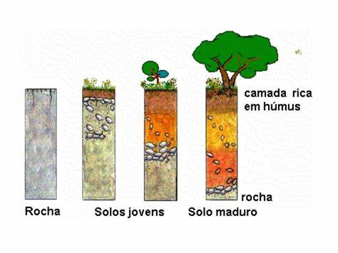

Mecânica dos Solos
Intemperismo e Formação dos Solos
A Mecânica dos Solos é o ramo que estuda como os solos se comportam quando são submetidos a cargas, analisa-se suas propriedades químicas e físicas. Esse conhecimento é fundamental para o curso, já que vocês terão noções fundamentais para estudar Sistemas Construtivos, Estruturas de Concreto Armado, Materiais de Construção e entre muitos outros!
O que é Intemperismo?
Intemperismo é explicado como o conjunto de processos físicos, químicos e biológicos que provocam alterações nas rochas expostas na superfície da Terra. Isso faz com que essas rochas se transformem em materiais ainda mais "finos" e acabam formando os solos.
Você sabia que lááááá no começo da história da nossa querida Terra, a única coisa que existia era uma placa gigantesca de pura rocha? Chamamos isso de "rocha-mãe", que com o passar do tempo, transformou-se no que conhecemos hoje:
Tipos de Intemperismo
🔨 Ações Físicas
Também chamadas de "intemperismo mecânico", ocorrem por meio de processos físicos, com a fragmentação das rochas formando diversos tipos de sedimentos (por exemplo, a areia). São influenciadas pela variação de temperatura e pressão.
⚗️ Ações Químicas
Por meio de reações químicas que ocorrem através da ação dos ventos, água e temperatura, resulta nas alterações dos minerais. Os principais processos são: hidrólise, hidratação, oxidação, redução, carbonatação e dissolução.
🌱 Ações Biológicas
Provocado principalmente pela decomposição dos seres vivos, favorecendo a transformação das rochas e o enriquecimento do solo através de processos biológicos naturais.
Classificação dos Solos
- Fatores que influenciam o intemperismo
- Classificação quanto à origem